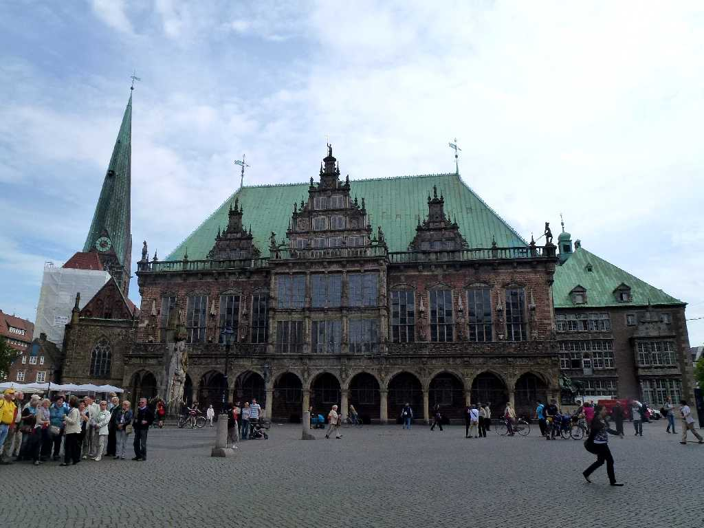
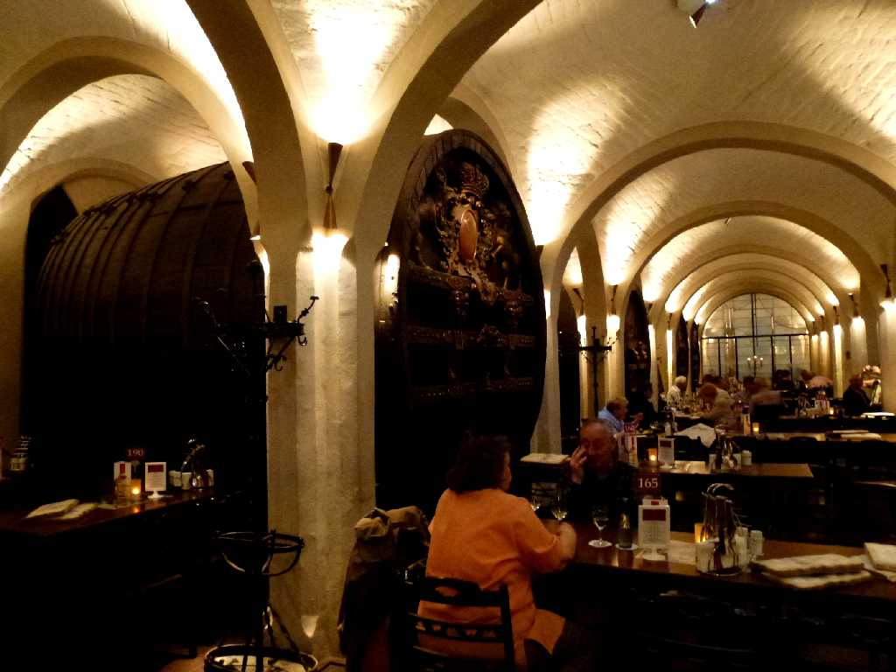
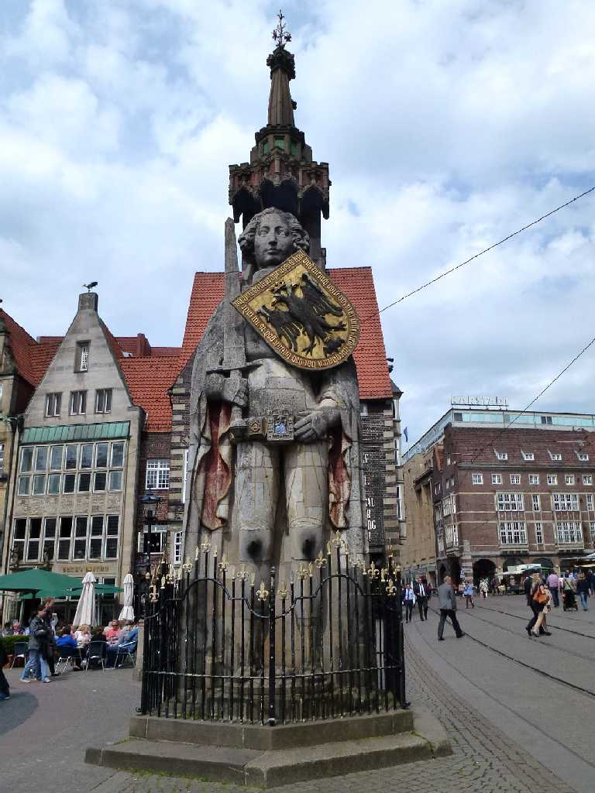
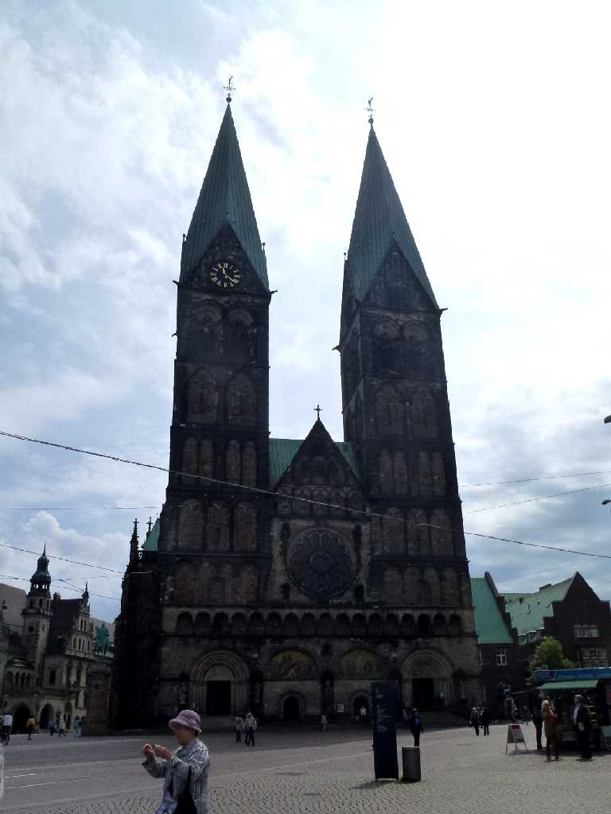
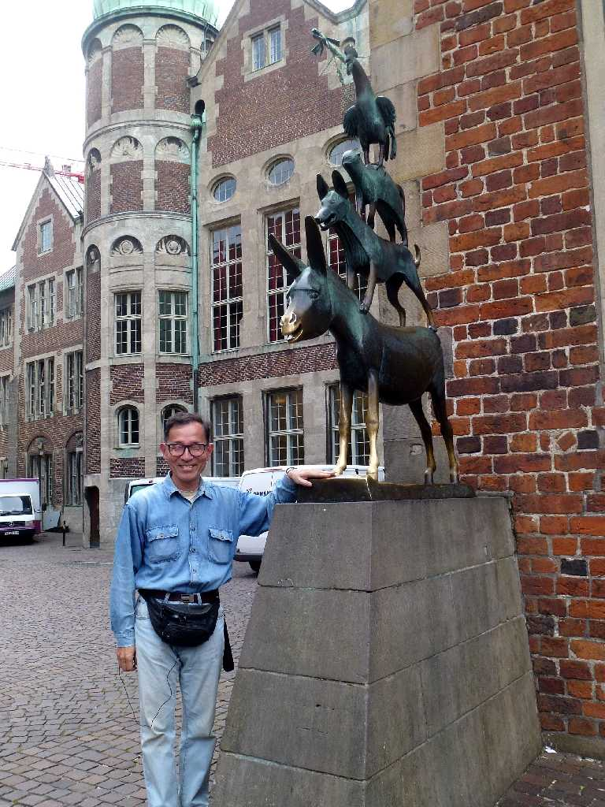

Rathaus Marktplatz Bremen
１４１０年に創られたヴェザールネサンス様式のブレーメン市庁舎

Bremer Ratskeller Rathaus Marktplatz
市庁舎地下にある酒場ブレーマーラーツケラーは１６５３年に創られたドイツ最古のワイン樽蔵でワインを飲みながら魚料理の昼食

Roland Marktplatz
１４０４年に創られたマルクト広場のローランの歌に登場する英雄ローラントの像

Bremen St. Petri Dom Marktplatz
７８９年木造教会が創られ１９００年再建された聖ペトリ大聖堂

May 27 2014 Bremen Mizikacilari
グリム童話のブレーメンの音楽隊の像 ここからハーナウへ約１００ｋｍのメルヘン街道を遡る